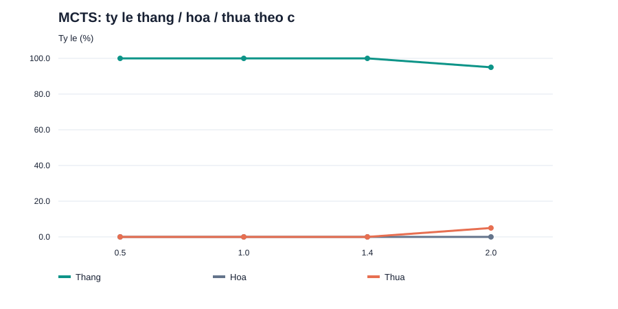
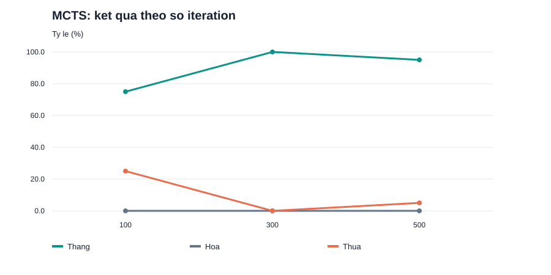
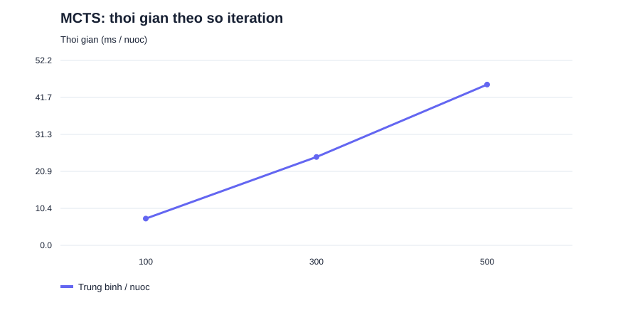

CARO 9×9 / AI LAB
Kết quả thực nghiệm
Mỗi cấu hình có ít nhất 20 ván, ghép cặp đổi bên X/O. Đây là dữ liệu chạy thật trên máy được ghi bên dưới.
Seed: 2026 · Python 3.12.14
CPU: AMD EPYC 9V74 80-Core Processor
Hệ điều hành: Linux-6.18.55-x86_64-with-glibc2.39
Không đặt thời hạn theo giây. MCTS dùng đúng số iteration; MiniMax tìm đến độ sâu đã chọn.
Thời gian là trung bình theo tất cả nước đi của tác nhân khảo sát, chỉ đo hàm chọn nước đi.
Đối sánh và khảo sát tham số
| Nhóm | Cấu hình |
Đối thủ | Thắng-Hòa-Thua | Tỷ lệ thắng | ms / nước |
|---|
| round_robin | alphabeta_vs_random | random | 20-0-0 | 100.0% | 2.378 |
| round_robin | mcts_vs_random | random | 20-0-0 | 100.0% | 33.744 |
| round_robin | mcts_vs_alphabeta | alphabeta | 0-0-20 | 0.0% | 34.256 |
| c_sweep | c=0.5 | random | 20-0-0 | 100.0% | 31.504 |
| c_sweep | c=1.0 | random | 20-0-0 | 100.0% | 28.516 |
| c_sweep | c=1.4 | random | 20-0-0 | 100.0% | 25.952 |
| c_sweep | c=2.0 | random | 19-0-1 | 95.0% | 25.335 |
| iteration_sweep | iterations=100 | random | 15-0-5 | 75.0% | 7.548 |
| iteration_sweep | iterations=300 | random | 20-0-0 | 100.0% | 24.937 |
| iteration_sweep | iterations=500 | random | 19-0-1 | 95.0% | 45.373 |



Hiệu quả cắt tỉa Alpha-Beta
Hai thuật toán dùng cùng hàm đánh giá, độ sâu,
thứ tự và tập ứng viên; kiểm tra cùng nước đi và giá trị trước khi xuất bảng.
| Thế cờ | Nước chọn | Nút MiniMax | Nút Alpha-Beta |
Giảm số nút |
|---|
| empty | E5 | 112 | 31 | 72.3% |
| opening | D6 | 1111 | 139 | 87.5% |
| middle | E3 | 1111 | 175 | 84.2% |
| threat | F5 | 1001 | 110 | 89.0% |
Cách đọc kết quả
20 ván/cấu hình là mức tối thiểu, còn nhiều biến động thống kê.
Không kết luận MCTS luôn thắng hoặc tăng c/iteration luôn làm tăng tỷ lệ thắng.
MCTS cơ sở rollout ngẫu nhiên đến hết ván, có thể bỏ lỡ đe dọa chiến thuật với ngân sách nhỏ.
MiniMax giới hạn K ứng viên nên không bảo đảm tối ưu trên toàn bộ cây hợp lệ.
Không so trực tiếp “nút” của hai họ thuật toán: Alpha-Beta đếm trạng thái gọi đệ quy;
MCTS đếm nút cây được tạo, tách khỏi số bước rollout.
Bảng tổng hợp CSV · Từng ván CSV ·
Nhật ký từng nước · Cấu hình máy và tham số